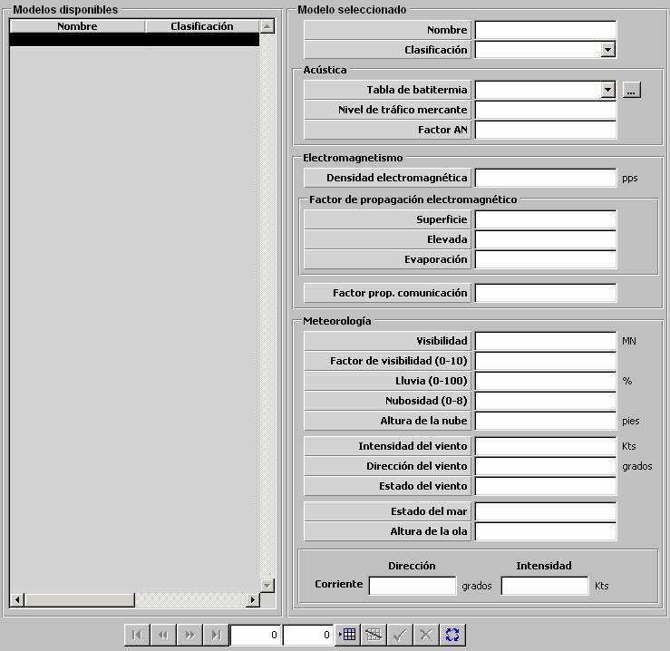

Condiciones Ambientales

Mediante la tabla de condiciones ambientales se especifican aquellos parámetros Acústicos, Electromagnéticos y Meteorológicos que afectan a sensores y comunicaciones. Estas condiciones ambientales podrán ser incluidas en un Ejercicio como condiciones ambientales generales o asociadas a una zona geográfica (Ver apartado Preparación de Ejercicios). Las condiciones ambientales de las distintas zonas podrán ser modificadas dinámicamente por el instructor durante la Ejecución de Ejercicios.
Acústica:
Batitermia: Ver apartado Batitermia.
Nivel de Tráfico Mercante: Este parámetro es tenido en cuenta para el cálculo del ruido ambiental, por tanto afecta al cálculo del exceso de señal recibido por los sonares activos y pasivos.
Unidades: ---
Rango: 1 – 7
Ejemplo:
Para frecuencias de 0 – 100 Hz:
Si Nivel de Tráfico Mercante = 1 Þ Ruido Ambiental = 55 dB.
Si Nivel de Tráfico Mercante = 4 Þ Ruido Ambiental = 70 dB.
Si Nivel de Tráfico Mercante = 7 Þ Ruido Ambiental = 85 dB.
Factor AN: Este parámetro es un factor de corrección del ruido ambiental recibido por una unidad. El ruido ambiental calculado a partir del nivel del tráfico mercante y del estado del mar es multiplicado por el Factor AN. Dado que las condiciones ambientales pueden ser modificadas por el instructor durante la ejecución de ejercicios, este factor le permitirá ajustar la influencia de del ruido ambiental sin alterar otros parámetros ambientales.
Unidades: ---
Rango: 0 – 10,0
Ejemplo:
Si Factor AN = 0 Þ Ruido Ambiental = 0 dB.
Si Factor AN = 1 Þ Ruido Ambiental = Ruido Ambiental calculado.
Si Factor AN = 10 Þ Ruido Ambiental = 10*Ruido Ambiental calculado.
Electromagnetismo:
Densidad Electromagnética: Este parámetro es tenido en cuenta por los modelos de Radar y ESM, afectando a la probabilidad de detección de contactos.
Unidades: pps (pulsos por segundo)
Rango: 0 – 9999999
Factor de Propagación Electromagnética: Los siguientes parámetros determinan los factores de propagación anómala en los ductos de Superficie, Elevada y Evaporación. Estos parámetros afectan al cálculo del alcance del radar según su lóbulo. Las alturas de los ductos de propagación consideradas se configuran en el fichero Galeon.ini. Por defecto son:
Superficie: Factor de propagación anómala en ducto de Superficie.
Unidades: ---
Rango: 0 – 10,0
Elevada: Factor de propagación anómala en ducto Elevado.
Unidades: ---
Rango: 0 – 10,0
Evaporación: Factor de propagación anómala en ducto de Evaporación.
Unidades: ---
Rango: 0 – 10,0
Ejemplo:
Si Factor Propagación EM = 0 Þ Alcance radar nulo.
Si Factor Propagación EM = 1 Þ No afecta al alcance radar.
Si Factor Propagación EM = 10 Þ Alcance radar * 10.
Factor de Propagación de Comunicaciones: Este parámetro determina el factor de propagación para las comunicaciones. Es tenido en cuenta para el cálculo del alcance de las redes de comunicaciones.
Unidades: ---
Rango: 0 – 10,0
Ejemplo:
Si Factor Propagación Com. = 0 Þ Alcance com. nulo.
Si Factor Propagación Com. = 1 Þ No afecta al alcance com..
Si Factor Propagación Com. = 10 Þ Alcance com. * 10.
Meteorología:
Visibilidad: Este parámetro determina la distancia a la que se dispone de visibilidad. Es tenido en cuenta para el cálculo de los alcances de los sensores optrónicos.
Unidades: Millas
Rango: 0 – 99
Factor de Visibilidad: Este parámetro es un factor de corrección del parámetro visibilidad el cual es multiplicado por este factor. Dado que las condiciones ambientales pueden ser modificadas por el instructor durante la ejecución de ejercicios, este factor le permitirá ajustar los alcances de los sensores optrónicos sin alterar otros parámetros ambientales.
Unidades: ---
Rango: 0 – 10,0
Lluvia: Este parámetro es un factor que modela la reducción del alcance de los sensores optrónicos y radares debido a la lluvia.
Unidades: %
Rango: 0 – 100
Ejemplo:
Si Lluvia = 0 Þ Los alcances no se ven afectados.
Si Lluvia = 25 Þ El alcance se ve reducido a un 75%.
Si Lluvia = 100 Þ Alcance = 0.
Nubosidad: Este parámetro es un factor que modela la reducción del alcance de los sensores optrónicos debido a la nubosidad.
Unidades: ---
Rango: 0 – 8
Ejemplo:
Si Nubosidad = 0 Þ Los alcances no se ven afectados.
Si Nubosidad = 4 Þ El alcance se ve reducido a un 50%.
Si Nubosidad = 8 Þ Alcance = 0.
Altura de la Nube: Este parámetro determina la altura de las nubes cuando se modela un nivel de nubosidad. Es tenido en cuenta por los sensores optrónicos para determinar si las nubes obstaculizan la detección, en cuyo caso, se reduce el alcance como se explica en el parámetro Nubosidad.
Unidades: pies
Rango: 0 – 99999
Los siguientes parámetros determinan la Dirección e Intensidad del Viento. Son tenidos en cuenta por los modelos de dinámica de aviones y helicópteros, y por misiles, torpedos, bombas, chaff y cargas de profundidad.
Dirección del Viento: Determina la Dirección del Viento.
Unidades: grados
Rango: 0 – 360
Intensidad del Viento: Determina la Intensidad del Viento.
Unidades: nudos
Rango: 0 – 100
Estado del Viento: Este parámetro es no editable y en él se muestra el valor correspondiente en la Escala Beaufort de Fuerza del Viento según el valor introducido de Intensidad de Viento. Ver tabla Equivalencia entre Viento y Estado de la Mar más adelante. Puede tomar los siguientes valores:
Estado del Mar: Este parámetro es no editable y en él se muestra el valor correspondiente en la Escala Douglas de Estado del Mar según el valor introducido de Intensidad del Viento. Es tenido en cuenta para el cálculo del ruido ambiental que afecta a los sonares. Ver tabla Equivalencia entre Viento y Estado de la Mar más adelante. Puede tomar los siguientes valores:
Altura de la Ola: Este parámetro determina la altura de la ola. El valor introducido debe estar en el rango correspondiente al Estado del Mar según la Escala Douglas. Ver tabla Equivalencia entre Viento y Estado de la Mar más adelante. Es tenido en cuenta por los modelos de sensores optrónicos y radares (Sea Clutter).
Unidades: metros
Rango: El correspondiente al Estado del Mar según Escala Douglas.
Corriente: Los siguientes parámetros determinan la dirección e intensidad de la corriente. Son tenidos en cuenta por los modelos de dinámica de superficies y submarinos, y por sonoboyas, torpedos y cargas de profundidad.
Dirección: Determina la Dirección de la Corriente.
Unidades: grados
Rango: 0 – 359
Intensidad: Determina la Intensidad de la Corriente.
Unidades: nudos
Rango: 0 – 100
| EQUIVALENCIA ENTRE VIENTO Y ESTADO DE LA MAR | ||||||
| FUERZA DEL VIENTO (ESCALA BEAUFORT) |
ESTADO DEL MAR (ESCALA DOUGLAS) |
|||||
| B | NOMBRE | NUDOS | EFECTOS DEL VIENTO EN ALTA MAR |
D | NOMBRE | ALTURA OLAS (m) |
| 0 | CALMA | 1 | Mar como un espejo. | 0 | CALMA O LLANA |
0 |
| 1 | VENTOLINA | 1 - 3 | Rizos como escamas de pescado pero sin espuma. |
|||
| 2 | FLOJITO | 4 - 6 | Pequeñas olas, crestas de apariencia vítrea, sin romperse. |
1 | RIZADA | 0 a 0,1 |
| 3 | FLOJO | 7 - 10 | Pequeñas olas, crestas rompientes, espuma de aspecto vítreo, aislados vellones de espuma. |
2 | MAREJADILLA | 0,1 a 0,5 |
| 4 | BONANCIBLE - MODERADO |
11 - 16 | Pequeñas olas creciendo, cabrilleo numeroso y frecuente de las olas. |
3 | MAREJADA | 0,5 a 1,25 |
| 5 | FRESQUITO | 17 - 21 | Olas medianas alargadas, cabrilleo (con salpicaduras). |
4 | FUERTE MAREJADA |
1,25 a 2,5 |
| 6 | FRESCO | 22 - 27 | Se forman olas grandes, crestas de espuma blanca (salpicaduras frecuentes). |
5 | GRUESA | 2,5 a 4 |
| 7 | FRESCACHÓN | 28 - 33 | El mar crece; la espuma blanca que proviene de las olas es arrastrada por el viento. |
6 | MUY GRUESA | 4 a 6 |
| 8 | TEMPORAL | 34 - 40 | Olas de altura media y mas alargadas, del borde superior de sus crestas comienzan a destacarse torbellinos de salpicaduras. |
|||
| 9 | TEMPORAL FUERTE |
41 - 47 | Grandes olas, espesas estelas de espuma a lo largo del viento, las crestas de las olas se rompen en rollos, las salpicaduras pueden reducir la visibilidad. |
|||
| 10 | TEMPORAL DURO |
48 - 55 | Olas muy grandes con largas crestas en penachos, la espuma se aglomera en grandes bancos y es llevada por el viento en espesas estelas blancas, en conjunto la superficie esta blanca, la visibilidad esta reducida. |
7 | ARBOLADA | 6 a 9 |
| 11 | TEMPORAL MUY DURO |
56 - 63 | Olas de altura excepcional (pueden perderse de vista tras ellas barcos de tonelaje pequeño y medio), mar cubierta de espuma, la visibilidad esta reducida. |
8 | MONTAÑOSA | 9 a 14 |
| 12 | TEMPORAL HURACANADO |
más de 64 | Aire lleno de espuma, salpicaduras, mar cubierto de espuma visibilidad muy reducida |
9 | ENORME | más de 14 |